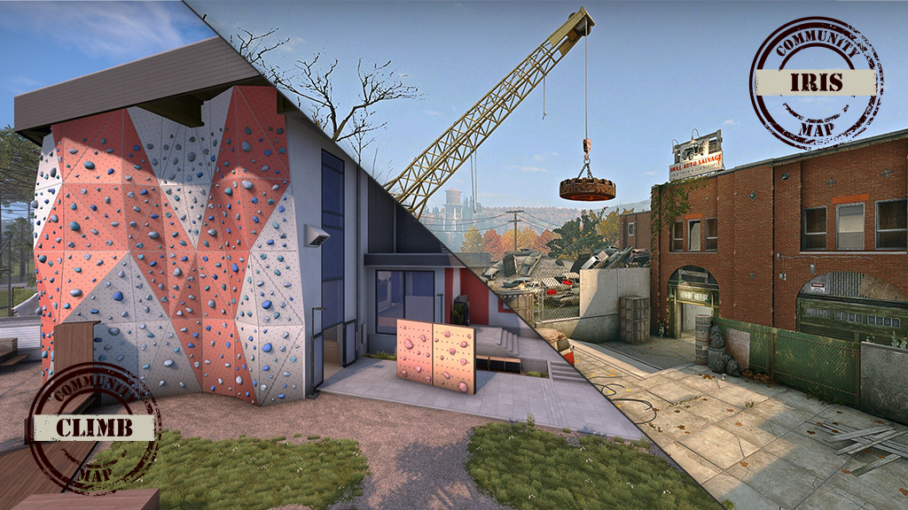
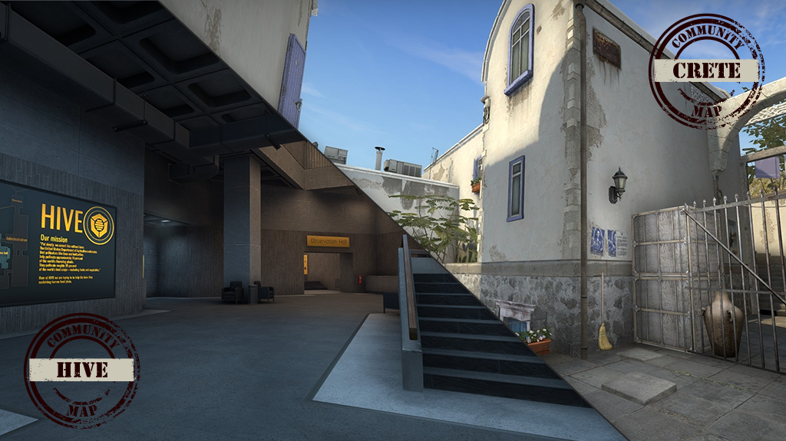
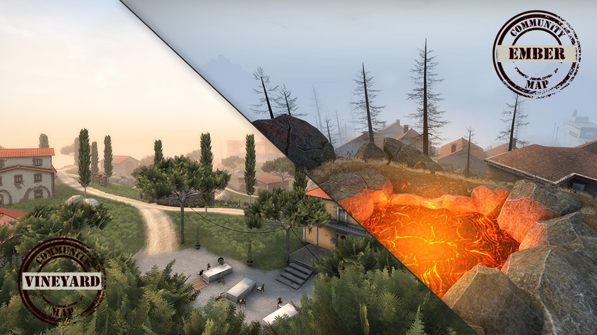

R.I.P.tide
2022.02.21
Operation Riptide has come to a close, but all of the game modes introduced in Riptide will live on,
including short competitive matches and free-for-all deathmatch. Those of you who still have stars to
spend
can claim operation rewards until March 27th.
Turning the Tide
Today we’re swapping some of the community maps in CS:GO. Basalt, Ravine, Extraction, Insertion II, and
County have been removed, and six new maps have entered the pool.
Iris and Climb have been added to official matchmaking, and are available in Casual,
Competitive, and
Deathmatch game modes

In Wingman, you can try your hand at two new maps: Crete and Hive.

Meanwhile, there are two new Danger Zone maps available. Take a stroll through Vineyard, and
watch your step!
